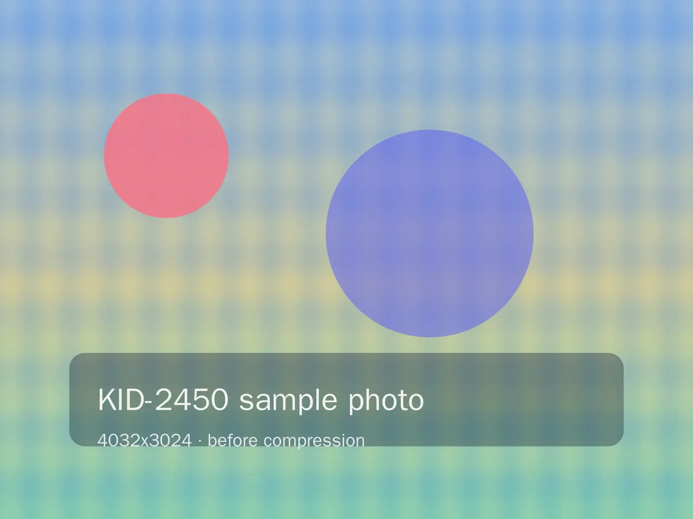
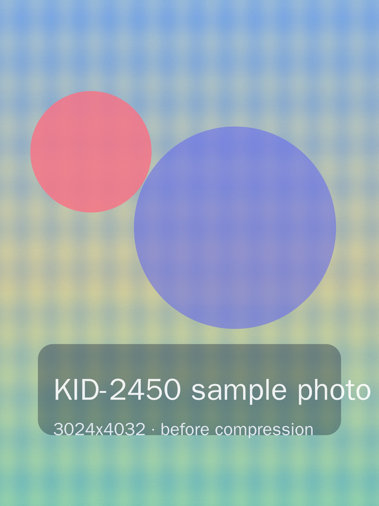

Same sample source, prepared with the client algorithm: longest edge 1280px,
WebP at ~80% quality (JPEG fallback), stepping down toward a 400 KB target.
Generated from comparison.json for the founder’s staging review.


| Sample | Before | After | Saved |
|---|---|---|---|
| phone-landscape | 2,278,144 B (4032×3024) | 23,232 B (1280×960) | 99.0% |
| phone-portrait | 2,131,078 B (3024×4032) | 25,996 B (960×1280) | 98.8% |
| small-already-ok | 213,781 B (1200×900) | 99,082 B (1200×900) | 53.7% |